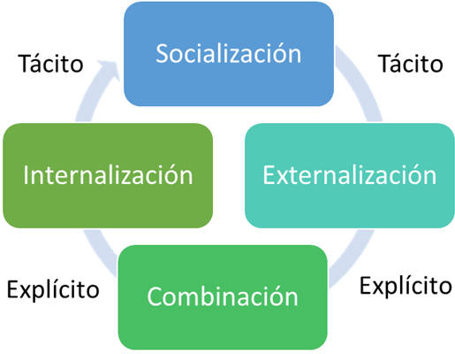

La Espiral de Aprendizaje: Integrando el Modelo SECI en la Transferencia de Conocimiento Formativo

Socialización:Los procesos formativos a menudo comienzan con la socialización, donde los estudiantes o aprendices adquieren conocimientos tácitos a través de la observación y la práctica junto a otros más experimentados. En un entorno de formación dual, esto podría ocurrir durante las pasantías o el aprendizaje en el lugar de trabajoMaravilhas y Martins (2019).
Externalización:La educación formal implica convertir el conocimiento tácito en explícito. Los educadores animan a los estudiantes a expresar sus experiencias y comprensiones personales, lo que puede facilitar la discusión en clase y la construcción de teorías o modelos que otros pueden entender y sobre los cuales pueden construir Maravilhas y Martins (2019).
Combinación:En la educación, los estudiantes combinan nuevo conocimiento explícito (por ejemplo, teorías y datos de libros de texto y recursos en línea) con el conocimiento que ya tienen. Esto se ve en el desarrollo de proyectos, investigación y la aplicación de conceptos en diferentes contextos Maravilhas y Martins (2019).
Internalización: Los estudiantes internalizan el conocimiento explícito adquirido a través de su aplicación práctica. Esto puede manifestarse en la realización de ejercicios, el desarrollo de habilidades prácticas o la participación en simulaciones que permiten a los estudiantes incorporar el conocimiento en su comprensión tácita Maravilhas y Martins (2019).
Otros modelos de transferencia del conocimento aplicados al ambito de la formación:
| Modelo | Descripción | Aplicación en Formación Profesional |
|---|---|---|
| Modelo 4I de Crossan et al. | Transforma conocimiento individual en organizacional: Intuición, Interpretación, Integración, Institucionalización. | Alinear la formación con estrategias y prácticas organizacionales. |
| Modelo de Gestión del Conocimiento de Wiig | Construir y utilizar conocimiento para ventaja competitiva. | Asegurar relevancia y aplicabilidad del conocimiento empresarial. |
| Modelo de cadena de valor del conocimiento de Bontis | Análisis de cómo el conocimiento agrega valor en su adquisición, aplicación y medición del rendimiento. | Evaluación del aporte del conocimiento al rendimiento laboral. |
| Modelo de aprendizaje experiencial de Kolb | Transformación de la experiencia en conocimiento a través de un ciclo de aprendizaje. | Enfatizar el aprendizaje práctico y la aplicación de conocimientos. |
| Modelo de transferencia de formación de Baldwin y Ford | Condiciones para la transferencia efectiva de la formación al puesto de trabajo. | Mejorar la aplicación práctica del conocimiento en el entorno laboral. |